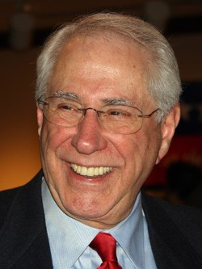

About The Candidates
Making a well-informed and thought out decision is very crucial to the voting process. In order to do this, it is imperative that you know your candidates. The next major election is the 2020 presidential election. This particular election is of great significance and will deeply impact the future of America, so you want to make sure to have a say in it. Luckily, here at PC, we have taken up the responsibility of providing you with a concise biography of all the 28 candidates that will assist you in making the right choice.
|
He was Barack Obama's Vice President and right-hand man which has given him plenty of experience and has resulted in him leading the polls. He also has decades of federal experience as a senator from Delaware and a centrist appeal that could sway moderate Republicans and independents. He presently leads Penn Biden Center for Diplomacy and Global Engagement at the University of Pennsylvania. His main aim is to push tech education and increase bargaining power for American workers as a solution to the left-behind working and middle class.
|
He is a Brooklyn-born self-described democratic socialist, and was elected mayor of Burlington, Vermont in 1981 by a margin of just three votes. He was elected to the US House of Representatives in 1990, and the US Senate in 2006, where he remains today, the longest-serving independent senator in the history of the US. He would like to make public colleges tuition-free, increase Social Security benefits, and make corporate America more union-friendly.
|
Elizabeth Warren was a Chair of the Congressional Oversight Panel from 2008 to 2010, a Special Advisor for the Consumer Financial Protection Bureau from 2010 to 2011, and is currently the Vice Chair of the Senate Democratic Caucus and United States Senator from Massachusetts. She advocates federally legalized marijuana and wants to repeal the law that criminalizes unauthorized border crossings.
|
She is the child of Jamaican and Indian immigrants and was the former Democratic Senator from California, attorney general of California from 2011 to 2017, district attorney of San Francisco from 2004 to 2011, attorney in both the Alameda County District Attorney's Office and the San Francisco District Attorney's Office. The main aims from her campaign include overcoming economic issues, including universal pre-K, debt-free college, a tax cut for working- and middle-class families of up to $500 a month and Medicare for All.
|
|
Joe Biden (D) |
Bernie Sanders (D) |
Elizabeth Warren (D) |
Kamala Harris (D) |
|
He is the mayor of South Bend, a Republican conservative area. He appeals to millenials by saying that we
can't look for greatness in the past.He is an Afghanistan war veteran and former consultant, and the city's youngest mayor. His LGBTQ, Harvard- and Oxford-educated profile may appeal to coastal elites and his midwest roots may give him an advantage in the rest of the country. He wants to increase public protections of jobs and benefits to help make the employment market more dynamic without the fear of personal debt tied to college loans and medical bills. |
He was a former representative from Texas and a member of the U.S. House of Representatives from 2013 to 2019. He ran for U.S. Senate against incumbent Ted Cruz (lost by 2%). He also previously served on the El Paso City Council. His main goals include establishing universal healthcare, combating climate change and wants to improve immigration. He says that "If immigration is a problem, it's the best possible problem for this country to have and we should ensure that there are lawful paths to work, to be with family, and to flee persecution."
|
Andrew Yang is an entrepreneur who advocates Universal income where everyone 18 and over get $1000 a month, and a single payer health care system. He hopes to legalize marijuana and pardon all non-violent marijuana related offenses, as well as support the idea of a trickle up economy.
|
He is a former Newark, New Jersey senator and appeals to the public based on his focus on social and racial equality. He gained celebrity-politician status thanks to his early use of social media and has been accused of being close to wealthy elites and committing media-friendly stunts. His main aims include, a "baby bond" program that would give every child a US Treasury bond at birth, with a larger amount for poorer kids. He would also propose guaranteeing a $15 minimum-wage job in 15 test areas.
|
|
Pete Buttigieg (D) |
Beto O'Rourke (D) |
Andrew Yang (D) |
Cory Booker (D) |
|
She is the first Hindu member of the Congress. The Hawaii representative controversially met with Syrian leader Bashar al-Assad and sided with Russian president Vladimir Putin against Obama on US intervention in Syria. She is strongly opposed to regime-change wars after her experience fighting in the Iraq war as part of the National Guard, she speaks about fighting "radical Islam." She wants to cut taxes on small businesses and farmers, raise them on corporations; lower military spending by ending regime-change wars and reducing the acquisition of nuclear weapons.
|
He is a Democratic member of the U.S. Senate from Minnesota. Prior to serving in the U.S. Senate, Klobuchar was a partner at the law firms of Dorsey & Whitney and Gray Plant Mooty. He aims at achieving automatic voter registration, reducing the amount of money in politics, and reinstating climate regulations that were eliminated by the Trump administration.
|
He was one time mayor of San Antonio and US secretary of housing and urban development under Barack Obama. Said experience and his mother's activism with Latino groups is his main pitch for his campaign. He has been a strong advocate of free trade, which has benefitted his hometown. He's defended free trade deals, arguing that instead of scrapping them, they should be reworked to strengthen protections for workers and the environment.
|
He is the governor of Montana and a former state attorney general. He made headlines by fighting for strong campaign finance laws. He is building his campaign on his ability to find common ground with conservative voters while implementing progressive policies. He wants finance laws so that representatives don't answer to donors, they answer to voters. He pledges to force every company that wants government contracts to disclose every campaign donation, outlaw superPACs and overturn Citizens United.
|
|
Tulsi Gabbard (D) |
Amy Klobuchar (D) |
Julian Castro (D) |
Steve Bullock (D) |
|
He is the two-term senator of Colorado. He is best known for helping Democrats pass the Affordable Care Act and for his January 2019 excoriation of Ted Cruz in Congress, where he criticized the Texas Republican senator's "crocodile tears" during the national government shutdown, noting that Cruz pushed a shutdown in 2013 when Colorado was "under water." His main idea is Medicare X, which he calls a "true public option" for healthcare, that bridges the gap between Sanders' "Medicare for all" plan (which he calls unrealistic) and private healthcare.
|
He is a former congressman from Maryland and started two publicly listed lending companies before running for office in 2012. He's already visited every county in Iowa, the first state in the primary contest, attempting to jumpstart his national campaign from there. His main aim is to build a public and private international coalition against China's intellectual property theft, and compete against China in Asia with a TPP-style trade deal.
|
He was the former Democratic senator from Washington, a member of the state House of Representatives, representing District 14, and was first elected to the U.S. House of Representatives in 1992. After moving to the Puget Sound area, Inslee was again elected to Congress, where he represented Washington's 1st Congressional District from 1999 to 2012. He said climate change was the pillar of his campaign. He has also proposed developing industries around this initiative, including building electric cars, installing wind turbines, and establishing solar energy sources across the nation.
|
 He served two terms as Denver mayor before being elected Colorado governor in 2010. He also touts his experience of running rapidly growing Colorado, including by shepherding its economy and enforcing gun-control laws in the state. A moderate with bipartisan appeal, he pitches himself as the right person to take on Donald Trump.His goals include developing methane emissions laws with environmentalists and oil and gas companies, expanding Medicaid in the state, pushing through gun control legislation that limited the sale of certain gun magazines and expanding background checks.
He served two terms as Denver mayor before being elected Colorado governor in 2010. He also touts his experience of running rapidly growing Colorado, including by shepherding its economy and enforcing gun-control laws in the state. A moderate with bipartisan appeal, he pitches himself as the right person to take on Donald Trump.His goals include developing methane emissions laws with environmentalists and oil and gas companies, expanding Medicaid in the state, pushing through gun control legislation that limited the sale of certain gun magazines and expanding background checks.
|
|
Michael Bennet (D) |
John Delaney (D) |
Jay Inslee (D) |
John Hickenlooper (D) |
|
He is the mayor of New York City and has served as the city's public advocate and on Hillary Clinton's winning Senate campaign. His time as mayor has been rocky. Still, he's expected to emphasize his achievements there to progressive voters, including $15 minimum wage, universal pre-Kindergarten, and a drop in crime.
|
 She is a Democratic member of the U.S. Senate from New York and a former corporate lawyer. She worked as an attorney, law clerk, campaign staffer, and Special Counsel to the Secretary of Housing and Urban Development. She also represented New York's 20th Congressional District in the U.S. House from 2007 to 2009. She has been pushing the US to require that companies adopt a universal paid parental leave policy and increasing transparency in politics.
She is a Democratic member of the U.S. Senate from New York and a former corporate lawyer. She worked as an attorney, law clerk, campaign staffer, and Special Counsel to the Secretary of Housing and Urban Development. She also represented New York's 20th Congressional District in the U.S. House from 2007 to 2009. She has been pushing the US to require that companies adopt a universal paid parental leave policy and increasing transparency in politics.
|
He is a Democratic U.S. representative from Ohio. He served eight terms in the U.S. House and unsuccessfully challenged Nancy Pelosi in 2016. He was also a member of the Ohio State Senate from 2000 to 2002. He has talked about creating jobs in electric-vehicle manufacturing and other green industries. He is pro-business and pro-fracking, and cautions against Democrats moving too far to the left. "We can't green the economy without the power of the free-market system," he said.
|
Marianne Williamson is an american author who ran as an independent to represent California's 33rd congressional district in 2014. Her key points are medicare for all, universal pre-school and free college, and the Green New Deal. She also supports DACA and a full path to citizenship for undocumented immigrants with no "serious criminal background," and wants to pay African Americans back for Slavery.
|
|
Bill De Blasio (D) |
Kristin Gillibrand (D) |
Tim Ryan (D) |
Marianne Williamson (D) |
|
He is the Democratic mayor of Miramar, Florida and a construction company owner. He has served as mayor of Miramar, a city with 150,000 people, since 2015. He was previously elected to the City of Miramar Commission in March 2011. He was running on a platform of curbing gun violence, fighting climate change, and "restoring the promise of America." His main goals includes cancelling the US's $1.5 trillion in student debt, calling it a "moral issue," and a hurdle that prevents economic mobility in the country. He would also rescind Trump's tax cut on corporations and the wealthy.
|

He was the former Democratic Senator from Alaska and served in the Alaska State House of Representatives from 1963 to 1966 in addition to being speaker of house for two years. His main aims include improving transportation policy, including nationalizing railways, redirecting funding from highways to public transportation and creating an interstate bikeway system.
|
He was a Democratic member of the U.S. House representing Massachusetts' 6th Congressional District and was first elected to the House in 2014. He was also a member of the United States Marine Corps. He served four tours in Iraq between 2003 and 2008 and was among the first groups of American soldiers to reach Baghdad during the 2003 invasion. He pledges to wrestle the idea of patriotism back from Republicans, cut weapons programs the US doesn't need, stop Russian cyber-hacking and restore America's moral authority.
|
He is a retired navy officer and former National Security Council director of defense policy under Bill Clinton, Sestak represented a deep-red district of Pennsylvania as a Democratic congressman between 2007 and 2011. He then ran unsuccessfully twice for Senator in Pennsylvania, and is now the president of First Global, a nonprofit focused on STEM education. His main aims are to cut taxes for the middle class, raise corporate tax.
|
|
Wayne Messam (D) |
Mike Gravel (D) |
Seth Moulton (D) |
Joe Sestak (D) |
|
Tom Steyer is a billionaire and philanthropist who aims to push the country to a greener approach at life, and keep illegal immigrants out of the country. He also advocates for LGBTQ equality. He was expected to run for Senate in 2016 and governor of California in 2018, but did not enter those races.
|
She is a lawyer, businesswoman and novelist and is still in the consideration process to run for office. She was a Georgia state representative from 2007 to 2017. She was the Democratic candidate in the 2016 gubernatorial race in that state, losing narrowly to Secretary of State Brian Kemp. Her main aim is Tackling working-class poverty by fighting stagnant wages, offering skills training, and encouraging financial literacy.
|
Donald Trump is a businessman and the current president of the USA. His key points are keeping illegal immigrants out of the country, cutting taxes, and putting tariffs on chineese goods to force them to negotiate.
|
He was the 68th Governor of Massachusetts, U.S. assistant attorney general for the Criminal Division and the U.S. attorney for the District of Massachusetts. He is pro-choice, supports legalizing, cutting taxes and spending, and rejoining the Paris Agreement.
|
|
Tom Steyer (D) |
Stacey Abrams (D) |
Donald Trump (R) |
Bill Weld (R) |
Presidential Candidates on the Political Spectrum, According to Political Compass